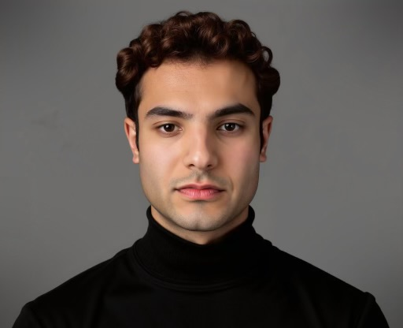

UBC Electrical Engineering grad working across satellites, silicon photonics, and RF systems — wherever signal integrity and system-level thinking matter most.

I'm an Electrical Engineering graduate from the University of British Columbia with hands-on experience across satellite hardware, maritime communication systems, photonic integrated circuits, and drone platforms.
My work spans the UBC ORBIT Satellite Design Team, an internship at Seaspan, and a year-long Capstone with Huawei Canada — and I'm currently training for my pilot's license. I'm drawn to the boundary between hardware and software, especially where signal integrity and system-level thinking decide whether something works.